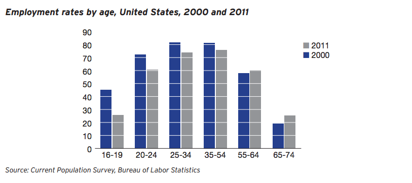

Employ Young Americans Now
a path towards full employment
Outline
- Motivation
- Theoretical Background of Full Employment
- Legislative Background of Full Employment
- What would Sanders do?
- Employ Young Americans Now
- Reaching Full Employment
Motivation
the USA's stated economic goals:
- full employment
- price stability
1977 Amendment to the Federal Reserve Act and the Employment Act of 1976
which levers can we pull?
- monetary policy
- Federal Reserve, largely "trained" economists
- fiscal policy
- Congress, largely politicians bought with money
critique of "independent" economic "science"
"In the United States the revival of belief in the potency of monetary policy was strengthened also by increasing disillusionment with fiscal policy, not so much with its potential to affect aggregate demand as with the practical and political feasibility of so using it" - Milton Friedman
monetary policy had become "perfected" by the Taylor Rule in the Great Moderation
yet, we still do not have full employment
what to do?
get back to our roots as political economists
subvert models, bring back ethics and morality
"The transition from a paradigm in crisis to a new one from which a new tradition of normal science can emerge is far from a cumulative process, one achieved by an articulation or extension of the old paradigm. Rather it is a reconstruction of the field from new fundamentals, a reconstruction that changes some of the field's most elementary theoretical generalizations as well as many of its paradigm methods and applications. During the transition period there will be a large but never complete overlap between the problems that can be solved by the old and by the new paradigm. But there will also be a decisive difference in the modes of solution. When the transition is complete, the profession will have changed its view of the field, its methods, and its goals." - Thomas Kuhn
theoretical background of full employment
most models assume full employment
certain economists rejected that assumption
Keynes
Effective Demand:
businesses employ an amount of labor such that they expect profit and growth forthcoming
Bury Banknotes:
"If the Treasury were to fill old bottles with bank-notes, bury them at suitable depths in disused coal-mines which are then filled up to the surface with town rubbish, and leave it to private enterprise on well-tried principles of laissez-faire to dig the notes up again (the right to do so being obtained, of course, by tendering for leases of the note-bearing territory), there need be no more unemployment and, with the help of repercussions, the real income of the community, and its capital wealth, would probably become a good deal greater than it actually is."
ethics in economics
- wealth and goodness
- 'we cannot . . . do fine actions if we lack resources'
- psychology of wealth creation
- 'enough' is never 'enough'
- role of justice
- non zero Fed funds rate as THE 'unjust price'
- place of religion
"The empire of greed should be progressively retracted as its job neared completion." - Skidelsky
Kalecki
The Profit Equation:
profit in the system is equal to the sum of investment, consumption, the government deficit, and net exports, then subtracting out wages
Political Aspects of Full Employment
“a solid majority of economists is now of the opinion that, even in a capitalist system, full employment may be secured by a government spending programme, provided there is in existence adequate plan to employ all existing labour power, and provided adequate supplies of necessary foreign raw-materials may be obtained in exchange for exports”
Minsky
Employer of Last Resort:
solves the three problems of the system
take workers as they are and pay them for training
legislative background of full employment
After the Great Depression
The New Deal
"It is important to note that initially the federal employment programs were not based on any idea of Keynesian macroeconomic stabilization, but rather on moral and ethical grounds that employment was preferable to the dole and would have a better psychological impact on the elimination of fear." - Kregel
1946 Employment Act -> 1978 Humphrey Hawkins Act
led to the 'golden age of capitalism', recessions in 1950's were short and shallow, contained with spending
ended in the 70's with Reagan, Thatcher, Friedman
1978 Humphrey Hawkins Act
The Act set specific numerical goals for the President to attain. By 1983, unemployment rates should be not more than 3% for persons aged 20 or over and not more than 4% for persons aged 16 or over, and inflation rates should not be over 4%. By 1988, inflation rates should be 0%. The Act allows Congress to revise these goals over time.
If private enterprise appears not to be meeting these goals, the Act expressly allows the government to create a "reservoir of public employment." These jobs are required to be in the lower ranges of skill and pay to minimize competition with the private sector.
The Act directly prohibits discrimination on account of gender, religion, race, age, and national origin in any program created under the Act.
What would Sanders do?
a report by Gerald Friedman of UMass Amherst
deemed impossible by former CEA economists
Employ Young Americans Now
Distribution
Money is provided through two different channels:
- $1.5 billion in competitive grants for work based training and education
- $4 billion for summer and year round employment opportunities
- $1 billion divided equally between States
- $1 billion distributed on the basis of the relative number of 16-25 year old individuals in the civilian labor force, compared to the total number in all States.
- $1 billion distributed on the basis of the relative number of unemployed individuals in each State, compared to the total number in all States
- $1 billion on the basis of the relative number of disadvantaged young adults and youth in each State, compared to the total number in all States.
To Full Employment
@bradvoracek
github.com/braddv
Representative John Conyer of Michigan and Senator Bernie Sanders of Vermont have introduced legislation which attempts to provide $5.5 billion dollars to create youth jobs.
The bill died in the 113th Congress, but has been reintroduced.
It is stuck in commitee with no chance of passing.
The Seed of a Job Guarantee
If implemented, it becomes a channel for direct government job creation. The bill establishes a fund, initially endowed with $5.5 billion dollars, to directly employ low income youth.
Distribution
Money is provided through two different channels:
- $1.5 billion in competitive grants for work based training and education
- $4 billion for summer and year round employment opportunities
- $1 billion divided equally between States
- $1 billion distributed on the basis of the relative number of 16-25 year old individuals in the civilian labor force, compared to the total number in all States.
- $1 billion distributed on the basis of the relative number of unemployed individuals in each State, compared to the total number in all States
- $1 billion on the basis of the relative number of disadvantaged young adults and youth in each State, compared to the total number in all States.
16-25 y/o labor force percentage
unemployment percentage
disadvantaged young adults percentage
- Governor sets aside 5% for administration
- Remaining funds get distributed to PUMAs within the State similar to how funds were allocated to States nationally
- 38,000 jobs
California:
400 million dollars (.02% GDP)
13% of the youth
10% unemployment
12% disadvantaged youth
.05*1 + .13*1 + .1*1 + .12*1 = 400 million
Assuming 720 hrs a year at $15/hr this creates 38000 initial jobs paying $10500 a year
14 million youth in poverty, 12% in California = 1.7 million
What jobs will we fund?
In July 2015, 27 percent of employed youth worked in the leisure and hospitality industry (which includes food services), 20 percent worked in the retail trade industry, and another 11 percent worked in education and health services.
ideas:The Grants
partnerships with chief elected officials and local boards
Checks and Balances
Monitor:
42,000 jobs for 1,700,000 young people living in poverty in California doesn't seem like enough
but it helps
- What type of jobs would be done?
- What type of multipliers can we expect?
- What will unemployment rates look like after the policy is enacted?
- What will poverty rates look like after the policy is enacted?
- gini? limew? limtip?
Why does it matter?
- African-American youth unemployment is at 51 percent.
- 20 million missing jobs in the economy
- "takes the unemployed as they are and tailor makes jobs to their skills"
youth were hit hard
In this paper, we study one of the key life cycle labor market facts: that unemployment declines as a function of age. We propose a simple model of occupational learning that accounts for this fact. Young workers, who are less likely to have found their “true calling,” are more likely to separate from employment matches. Hence, our model correctly predicts that age differences in unemployment rates are due to age differences in separation rates. Our calibrated model does a very good job at quantitatively replicating the age differences in unemployment and separation rates observed in the U.S. data. Moreover, labor force aging in our model accounts for a significant fraction of the fall in aggregate unemployment observed in the past 35 years.

questions?
comments?
concerns?